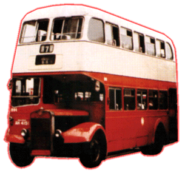
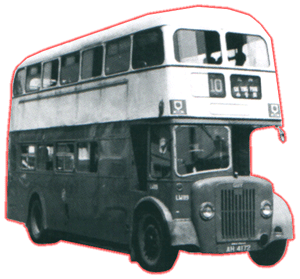
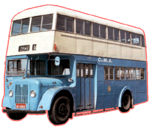
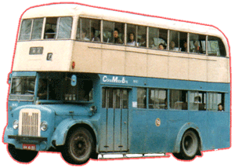
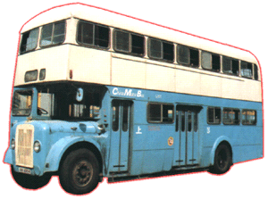
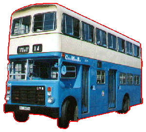

 |
車隊編號 Model
引擎 Engine
容積 Engine Capacity 波箱 Gearbox
車身 Body Build
體積 Volume
載客量 Passenger
服役年份 Year
|
: Gardner 6LW (108bhp) Gardner 6LX (150bhp) : 不詳 : Wilson-type Pre-selective with Fluid-flywheel [MW (1 - 17), LW (112 - 122)] Guy Semi-automatic Gearbox Daimatic Semi-automatic Gearbox SCG 340 Semi-automatic Gearbox SCG 350 Semi-automatic Gearbox
: 8534L X 2438W X 4420H(mm) [MW] 9144L X 2413W X 4445H(mm) [LW] 7925L X 2413W X 4445H(mm) [S] 7925L X 2413W X 4318H(mm) [LS] 8534L X 2413W X 4470H(mm) [M] 9144L X 2413W X 4445H(mm) [LX] 9449L X 2413W X 4445H(mm) [LX] 9144L X 2413W X 4445H(mm)[Walter Alexander] : (Total) 98 [LW] 其他不詳 U45 L35 S18 [Walter Alexander] : 1970 - 1980 [MW] 1963 - 198? [LW, LS, S, LX] 1963 - 1996 [Walter Alexander] |
此頁可算是最難解釋，因為車數和車身款式真的太多太複雜了。
Guy Arab IV 雙層巴士，全數 28 部，其中 17 部(MW 1 - MW 17) 用 Park Royal 車身，另外 11 部 (LW 112 - LW 122) 則用 Northern Counties 車身，全都是來自英國的二手貨。
Guy Arab V 雙層巴士，從 1963年至 1967 年間全數 115 部新車運到香港作戰，認真大批。由於最初這批巴士用 Gardner 6LW 引擎，所以車隊編號便成 "LW"，到後期中巴為它們更新，換上更大馬力之 Gardner 6LX 引擎，因而出現了 "LX" 的隊號。直到 1972 年，中巴再購入 10 部新 Arab V，但公司名已變成 Daimler [丹拿]，因為 Guy 已被 Daimler 成功收購，幸好新車仍沿用 Guy [紅番頭]，這可算是 Guy Bus 的最後 10 員了。而在同年，海底隧道通車，中巴派10名新將上戰場應付過海線，可惜九巴火力強猛，乘客亦十分多，令中巴非常吃力。到 70 年代中期，中巴推行一人控制 (即是不設找贖) ，又要將車身改成左上右落。後來中巴又將 44 部交短軸 (約 28 呎，原裝 30 呎) 之車子，改編號為 [M] ，由於車身比較短及靈活，所以便成為薄扶林道、華富、香港仔等南區路線主力。而最早期的 40 部 Arab V [Long-wheel Type] 長龍，亦要被改裝，先將車身改短和裝上雙層巴士車身分別有 MCW Orion、Northern Counties 及 BACO，所以又多了 40 部新瓶舊 "LX" 的巴士了。至於 106 部 [Short-wheel Type] 當然都要改的，有部被裝上特矮車身及車子十分短 ，所以編號為 [LS] ，而其餘普通短車身則編為 [S]。直到 1979 年，中巴想將 Arab V 的壽命延長，Walter Alexander [亞歷山大] 公司不負所託，替 [LX] 完成一個全新面貌車身，為它重新包裝 (沒有續命者，只能活到 80 年代初期)，從 201 至 350 共 50 部更換，令車子繼續穿梭跑馬地 (19號)、赤署炮台 (14號)、華富 (47號、41號)、石排灣道 (76號)、寶馬山道 (27號)，載滿乘客輕易地爬上各個山路，都可算是老當益壯；歲月摧車老，最後 Arab V 終於都在 1996 年全面退下火線，正式地劃上一個 ... ... 句號！